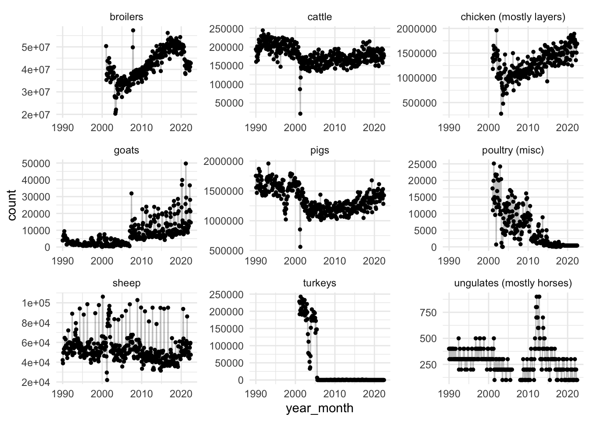
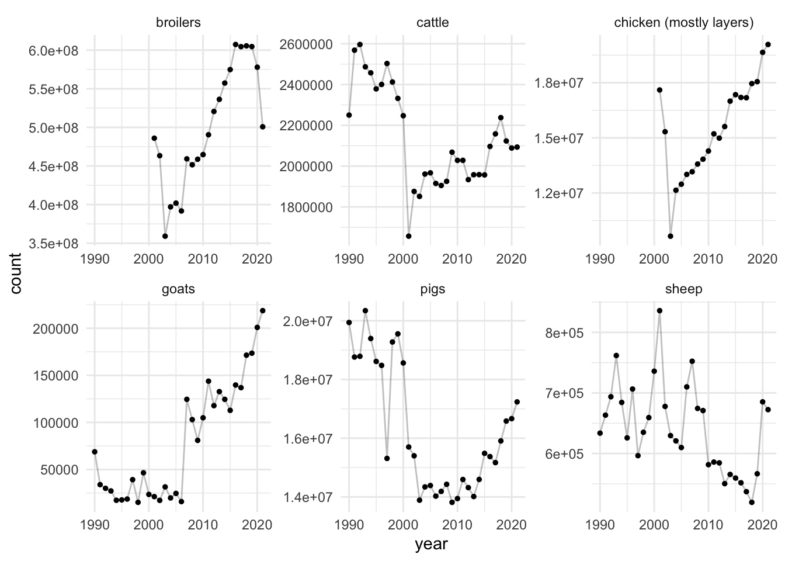

# Load packages
library(tidyverse)
# Load data
data <- read_csv2("meat-production-netherlands.csv")
# Set default ggplot
theme_set(theme_minimal())Animals slaughtered in the Netherlands
In this post I take a look at how many animals are slaughtered in the Netherlands. The goal is to find and clean the data to answer this question and feel horrible about what we’ll find. I’ll go through the entire process of getting the data, trying to understand it, and thinking of ways to visualize the data.
Data
The data on number of animals slaughtered in the Netherlands can be found on StatLine, a database managed by CBS. Specifically, we’re going to take a look at the meat production. The data of that can be found in a table here. The table shows both the number of animals as well as their weight. I’m only interested in the number of animals, so I deselect all the weight-related rows. I also see that they offer data on more dates than it shown by default, so I select all of the dates. I then download the data as a .csv file using a button in the top right corner. Now we can start.
Setup
Run the following setup code if you want to follow along. You can download the data yourself or use my file.
Note that we have to use read_csv2() because the data values are separated by a semi-colon. This is an annoying default in the Netherlands (and probably elsewhere in Europe).
Data cleaning
Let’s begin by inspecting the first few rows of the data.
head(data)# A tibble: 6 × 3
Slachtdieren Perioden `Aantal slachtingen (x 1 000)`
<chr> <chr> <dbl>
1 Rundvee (totaal) 1990 januari 194.
2 Rundvee (totaal) 1990 februari 160.
3 Rundvee (totaal) 1990 maart 190.
4 Rundvee (totaal) 1990 april 174.
5 Rundvee (totaal) 1990 mei 201.
6 Rundvee (totaal) 1990 juni 172.It should be no surprise, but the data is in Dutch. I don’t like that, so let’s translate the data, starting with the columns. One of the columns is called ‘Aantal slachtingen (x 1 000)’, which means number of slaughtered animals in units of 1000. Instead of translating this directly, I will simply rename it to count and multiply the values by 1000.
data <- data %>%
rename(
animal = Slachtdieren,
period = Perioden,
count = `Aantal slachtingen (x 1 000)`
) %>%
mutate(count = count * 1000)Let’s clean up the period column next. It seems like it contains the year and the month (in Dutch). I can translate the month names to Dutch, but I first want to make sure that all data values are structured the same way. count() is a great function to inspect that.
data %>%
count(period) %>%
head()# A tibble: 6 × 2
period n
<chr> <int>
1 1990 17
2 1990 april 17
3 1990 augustus 17
4 1990 december 17
5 1990 februari 17
6 1990 januari 17Curiously, not all rows in the data contain both the year and the month. Some only have the year. This is important because that means we can’t just sum the number of slaughtered animals per year because that means we’ll actually get twice the number of animals because we’ll sum both the animals slaughtered in that year and each month of that year.
What I want to do next is create a new column that only contains the year and another column that contains the month. Creating the year column is easy because we can use parse_number() to extract the year from the data. The month is a bit trickier, but we can use a regular expression to remove the year, leaving us with the month. We use str_remove() and tell it to remove a string pattern that consists of 4 numbers and a space. In addition to that, we need to remove an asterisk from some of the months because the most recent months have an asterisk because these are not yet the final numbers. In fact, we can add a column to say whether the numbers are final or not based on this asterisk. After doing that, we can recode the month values that need to be translated and also convert the empty string to a missing value. Finally, we remove the period column because we don’t need it anymore.
data <- data %>%
mutate(
year = parse_number(period),
month = str_remove(period, "[0-9]{4} ?"),
final = if_else(str_detect(period, "\\*"), "no", "yes"),
month = str_remove(month, "\\*"),
month = recode(month,
"augustus" = "august",
"februari" = "february",
"januari" = "january",
"juli" = "july",
"juni" = "june",
"maart" = "march",
"mei" = "may",
"oktober" = "october",
),
month = na_if(month, "")
) %>%
select(-period)Next are the animals. Let’s take a look at the unique values we have.
count(data, animal)# A tibble: 17 × 2
animal n
<chr> <int>
1 Eenhoevigen 422
2 Geiten (totaal) 422
3 Kalkoenen 422
4 Kalveren jonger dan 9 maanden 422
5 Kalveren van 9 tot en met 12 maanden 422
6 Koeien 422
7 Overig pluimvee 422
8 Overige kippen 422
9 Rundvee (totaal) 422
10 Schapen incl. lammeren 422
11 Schapenlammeren 422
12 Stieren 422
13 Totaal kalveren 422
14 Totaal volwassen runderen 422
15 Vaarzen 422
16 Varkens (totaal) 422
17 Vleeskuikens 422Hmm… it looks like there are a few challenges here. First, we seem to have both total values and non-total values, so we should take care to separate these, probably by removing them and only keeping the data that adds up to form the total. Second, we need to figure out what each word means. Even my Dutch is not helping me in understanding each type of animal.
Let’s first simply translate the values so we get a better grasp of what we are dealing with. The translations won’t be direct translations. Instead, I already think about what kind of categories make sense and how I want to later plot the data, so I translate the values into names that will also be useful later.
data <- mutate(data,
animal = recode(animal,
"Eenhoevigen" = "ungulates (mostly horses)",
"Geiten (totaal)" = "goats",
"Kalkoenen" = "turkeys",
"Kalveren jonger dan 9 maanden" = "calves (< 9 months)",
"Kalveren van 9 tot en met 12 maanden" = "calves (9-12 months)",
"Koeien" = "cows",
"Overig pluimvee" = "poultry (misc)",
"Overige kippen" = "chicken (mostly layers)",
"Rundvee (totaal)" = "cattle",
"Schapen incl. lammeren" = "sheep",
"Schapenlammeren" = "lambs",
"Stieren" = "bulls",
"Totaal kalveren" = "calves",
"Totaal volwassen runderen" = "adult cattle (total)",
"Vaarzen" = "heifers",
"Varkens (totaal)" = "pigs",
"Vleeskuikens" = "broilers"
)
)Translating the words was very helpful to better understand the data. One thing that’s clear is that some of the values are totals of other values. Below I list which values in the data are actually sums of other values:
adult cattle: Total of cows, heifers, and bulls
cattle: Total of adult cattle and calves
calves: Total of calves (< 9 months) and calves (9-12 months)
If we are interested in what the totals are made of, we can remove the total columns and reconstruct them later if we want to. This works for the first two total columns, but not calves because they only started making the distinction between young and older calves in 2009. So let’s instead remove the values that the total values are made of.
data <- filter(data, !animal %in% c("adult cattle (total)", "cows",
"heifers", "bulls", "calves","calves (< 9 months)", "calves (9-12 months)",
"lambs")
)This leaves us with the following animals.
count(data, animal)# A tibble: 9 × 2
animal n
<chr> <int>
1 broilers 422
2 cattle 422
3 chicken (mostly layers) 422
4 goats 422
5 pigs 422
6 poultry (misc) 422
7 sheep 422
8 turkeys 422
9 ungulates (mostly horses) 422We are almost done with the data cleaning. At this point I want to create two separate data frames: one that only contains the annual data and one that contains the monthly data. This is easy to do because we can take all the annual data by simply selecting the rows with a missing value in the month column.
data_annual <- data %>%
filter(is.na(month)) %>%
select(-month)
data <- filter(data, !is.na(month))As a final step we can combine the year and month into a single column, which will be useful for plotting the data later. This requires a special function from the zoo package.
data <- mutate(data,
month = str_to_sentence(month),
month = match(month, month.name),
year_month = paste(year, month, "1", sep = "-"),
year_month = lubridate::as_date(year_month),
year_month = zoo::as.yearmon(year_month)
) Data analysis
With the data cleaned up we can start to ask some questions. Let’s begin with a graph that shows as much data as possible.
ggplot(data, aes(x = year_month, y = count)) +
geom_point(size = 1) +
geom_line(alpha = .25) +
facet_wrap(~ animal, scales = "free") Warning: Removed 552 rows containing missing values (geom_point).Warning: Removed 132 row(s) containing missing values (geom_path).
A few interesting observations:
High numbers :(
None to few turkeys were slaughtered since around 2005
The number of misc. poultry that was slaughtered started to decrease and is around 0 now
Relatively few horses are slaughtered (although too many of course)
The data fluctuates a bit from month to month
Given these observations, let’s create a subset focusing on the six categories of animals that are still being slaughtered in large numbers and plot the annual data.
data_annual <- data_annual %>%
filter(animal %in% c("broilers", "goats", "sheep", "cattle", "pigs",
"chicken (mostly layers)")
) %>%
filter(final == "yes")
ggplot(data_annual, aes(x = year, y = count)) +
geom_point(size = 1) +
geom_line(alpha = .25) +
facet_wrap(~ animal, scales = "free")Warning: Removed 22 rows containing missing values (geom_point).Warning: Removed 11 row(s) containing missing values (geom_path).
Okay, parsing this graph I note that a lot of chicken are slaughtered every year. I also see that some animals are slaughtered more and more over the years, although I’m also surprised to see that for some animals we’ve had worse years, particularly for cattle and pigs.
Let’s create a table of the numbers for the last full year.
data_annual %>%
filter(year == 2021) %>%
arrange(desc(count)) %>%
select(animal, count)# A tibble: 6 × 2
animal count
<chr> <dbl>
1 broilers 500732500
2 chicken (mostly layers) 20079200
3 pigs 17236800
4 cattle 2093300
5 sheep 672400
6 goats 218700How many animals is that in total?
count_total_2021 <- data_annual %>%
filter(year == 2021) %>%
summarize(count_total = sum(count))Apparently that’s 5.410329^{8} animals killed in 2021. That’s 17.16 animals per second.
Conclusion
That means that about…
…have died since you started reading this blog post.